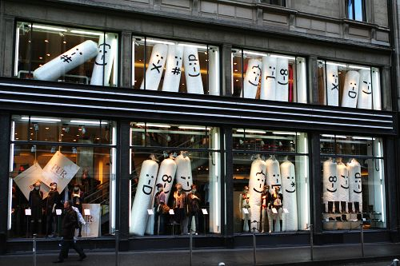
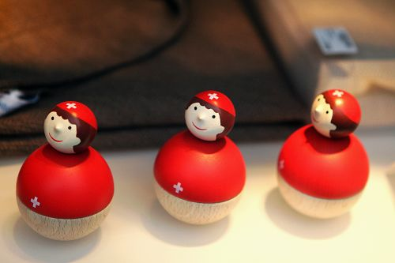
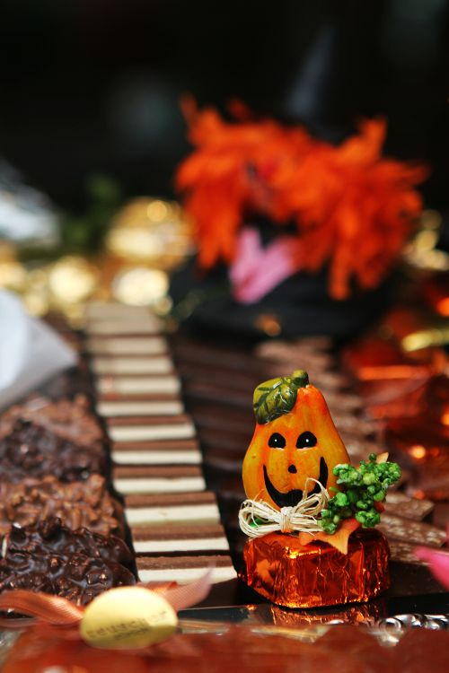
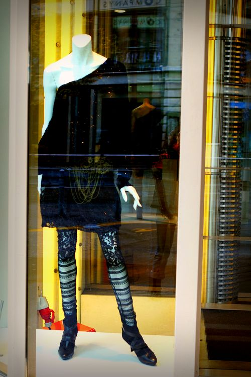
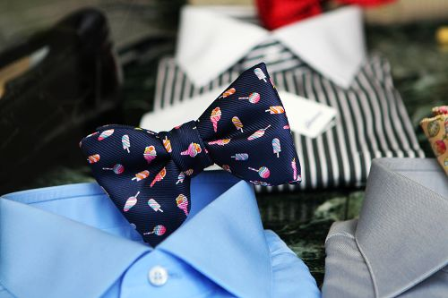
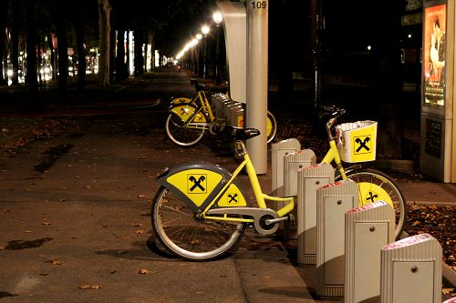

看了电视上“彩虹糖”的三个广告，第一次因为广告想去买来尝尝，创意太好玩了，用的是极普通的演员，好象连妆都没化，表演痕迹也是淡的很，看完第三支“彩虹糖”广告才顿悟这糖是让人一解烦忧的产品，以及今天“苏菲”广告里的两只兔子～哇～想从电视里揪住耳朵拎出来玩一玩。我喜欢那些有创意的橱窗和广告，可能因为自己太缺乏创意的缘故。在标准和程序井然有序地将人性分割成方块和三角，贴上“经典”标签打包出售，也许，包装上还有那句同样经典的台词“我更爱你现在备受摧残的面容”。在没有领略过Bauhaus之旅之前，这些在旅程中发现的各种小创意也一样能满足我那颗始终好奇又易被拨动的小心灵。
ZURICH班赫夫大街上BIG BOY商店外的橱窗。

SWISS MADE橱窗里的产品简洁抢眼，价格不敢恭维。瑞士的中产阶级以手工制造者为主，在瑞士可以找到许多创意设计，不去个两三回是无法感受透的。

班赫夫大街WOLFORD丝袜广告，诞生于1949年的WOLFORD，主要经营丝袜和内衣产品，现在也有了泳衣的生产线，该品牌不是将所有美好、性感、诱惑的元素融在一起的大杂烩，也不针对方方面面的市场阶层。WOLFORD只精选与众不同、新颖的素材，是一种针对少部分人的较奢侈产品。

布拉格书亭外拍摄的摇滚杂志封面，这照片编辑的忒有想象力了。

在PUDBEST和THUN的男女厕标志。


位于ZURICH的TEUSCHER巧克力店的橱窗，万圣节前夕，橱窗里几乎清一色南瓜小巫师的节日装饰，可爱又精巧。

瑞士籍著名时尚摄影师Michel Comte在时尚界已经25年，是当代全球四大最富盛名的摄影师之一。他被世人誉为“一个在视觉与心灵间行走的智者，一个以美的名义创造美的真实的人”。其作品常在Vogue, Vanity Fair, Interview, GQ等出现，摄影的对象都是全球著名的美女。
他于1954年出生在苏黎世，早年受训为一位绘画修复师，直至1979年他的人生有了重大改变，那年他受雇为时尚品牌Chloe拍摄平面广告，Karl Lagerfeld正是当时Chloe的创意总监。Michel Comte从未上过正规摄影课程，完全依赖自身天资和实践磨练。1981年，他搬至纽约，很快就找到自己的位置，成为美国的商业广告领域最具才华的摄影师。在过去的5年间，Michel Comte的作品流转于各大博物馆和画廊，成为他们的主要展出对象。2009年8月1日起，比利时布鲁塞尔Young Gallery将为庆祝Michel Comte从业30年举办回顾作品展。
如果你正好在展览期间去瑞士，有兴趣的话不妨去参观一下这位先生的作品。

呵呵，宠物店外的广告牌，狗狗也烫发呢~

ZURICH大牌橱窗里的模特，长统丝袜别致的设计不久大陆也会流行起来。

香港NOVOTEL酒店大堂的餐厅，那个高耸的玻璃酒柜和贴花的玻璃墙搭配在一起清爽雅致又多了点奢华感，装潢提升了餐厅档次。

从Cesky Krumlov小镇出来，有个广告牌竖在茂密的树林里，它原先的创意所表达的意思没看出来，倒是看出来创意上的创意是张笑脸。

有天晚上我一个人从金钟廊步行穿过香港公园，路上遇见一位穿着黑色礼服扎着领结的老先生正在路边抽着雪茄，好象参加什么酒会中间跑出来抽烟休息一下的。在大陆大概只有在影视剧里才能见着扎领结的猥琐男人。可是这位我在现实中遇到的扎领结的老先生就象欧洲电影里那些风度翩翩的绅士。
我只知道领结要比领带更隆重，传统上，领结要配更正式的礼服在隆重的场合下，它被认为是唯一正统的领口衣饰。领结在流行文化中，也被视为有内涵的象征。这是ZURICH商业街一间橱窗里的花领结，上面织着各种冰淇淋和雪糕的图案，好Q啊。

这套首饰总价CHF8200.00，折合人民币含税价57400.00，反正也不是平时佩带的。它们在木头的粗犷衬托下经典又性感！不知道从什么时候开始流行大大的一颗宝石、钻石、装饰石、合成石。。。随便什么石头，只要是大大的一颗在戒指上的设计。前年为了拥有一颗大大的茶色水晶戒指，不惜用新品换走营业员手上的旧戒指，喜欢的前提下旧的也可以。戴这种款式的戒指不方便从包里掏东西，不方便将衬衣塞进裙子。。。利弊总是同时存在的。

FORGOTTEN PRAGUE。。。被遗忘的布拉格。。。可能又是什么展览吧？

MTR香港人说的地铁，墙上的卡通画是为庆祝香港地铁建立30周年纪念。

维也纳供市民与游客使用的公共自行车，上面有醒目的黄色标志。

布拉格沐浴用品店的橱窗设计，大概是指产品均为纯天然原料制作。

6 Responses to “发现 创意之美”
2009-12-12
这一篇真美。专门查了下字典，那个展览是“展览的历史图片的布拉格”怎么样？俺们英文还算不错吧？哈哈。
2009-12-12
品味与智慧并存，创意属于善于思考的聪慧的人。
2009-12-12
itsmin好认真，我就没看第三行写着啥，嘿嘿~
2009-12-14
很喜欢你的照片，越看你的blog越有买单反的愿望，终于今天下手了: ) D90 ..从此踏上不归路
2009-12-14
很有意思。。丝袜很美，但是腿美的女人穿的才好看，你可以买双试试。。
2009-12-15
今天回家的路上忽然想了下你。呵呵。想想，什么时候才可以又看到你。这个平安夜我去上海出差，你来么？不知什么机会才有得去南京。
春节准备去土耳其，目前在订票和预订酒店以及做功课的阶段。蔡蔡
Leave A Reply
存档只读，评论已关闭。